/ 01
AI вместо рутины
Автоматизирую то, что съедает время: генерация тестов, документация, конспекты встреч, code review.
● Senior Project Manager · AI-Driven Delivery
Внедряю AI в команды разработки.
Меньше рутины — больше доставки.
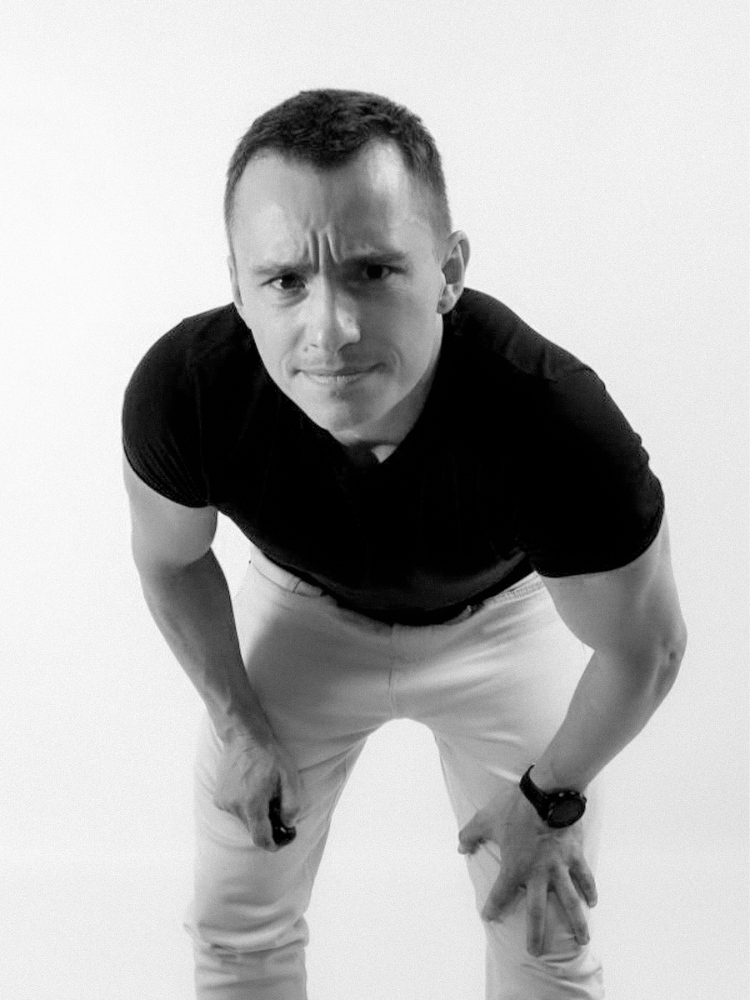
11 лет управляю IT‑проектами — от цифровизации производства DMG MORI до реализации компании‑единорога Healthcare B2B SaaS на международном рынке.
Фокус — ускорение процесса Delivery без потери качества за счёт AI‑инструментов и настройки SDLC. Внедряю AI в реальные команды: тесты, документация, code review, аналитика. Не теория — конкретные цифры по каждому внедрению.
Работал с крупными игроками: Rightway, Rostic's, ВТБ, Открытие, Совкомбанк, QIWI.
Берусь за проекты с высокой неопределённостью. Когда непонятно, как дойти до финиша — это то, с чем могу помочь.
Принципы, которые отличают мой подход от стандартного PM‑а с Jira и Excel.
Автоматизирую то, что съедает время: генерация тестов, документация, конспекты встреч, code review.
Lead Time, Cycle Time, CFD — с первых недель. Решения по данным. Предсказуемость: 68% → 92% за полгода.
Не беру спринт без понимания «зачем». Discovery‑фаза сокращает change‑requests на 40%.
PMP/PRINCE2 — для стратегии и governance. Углубление в технику — чтобы не терять доверие команды.
Регулярные 1‑on‑1, прозрачные треки развития. Текучесть ключевых специалистов: 18% → 8%.
Оценка трудоёмкости, защита КП перед заказчиком. Расширение аккаунта до x10.
Каждый кликабелен — внутри полная карточка проекта.
Healthcare B2B SaaS‑единорог ($1.1B) на рынке США. AI‑SDLC и автоматизация тестов.
Highload‑мобильное приложение сети ~1 300 ресторанов, 5M+ MAU. Запуск с нуля.
20+ проектов Data/BI для банков Топ‑10 (ВТБ, Открытие). Миграция DDS‑слоя ВТБ.
Сервис донатов для стримеров. 31% рынка РФ, TPV 7 млрд ₽. Запуск с нуля.
Корпоративный LMS для 3000+ сотрудников QIWI, который вышел в отдельный B2B‑продукт.
С одного лендинга — до портфеля из 10 проектов. Рост аккаунта в 10 раз.
80+ станков в MES. Первое в России шпиндельное производство. 120+ человек.
«Alex led our projects with a clarity and technical confidence that made a real difference for the team. As a tech lead, his problem-solving instincts shine brightest when things get complicated — he has a talent for cutting through ambiguity, aligning the team around the right approach, and keeping momentum without sacrificing quality. His dedication to delivering outcomes — not just completing tasks — is exactly what you want in a technical leader, and I'd work with Alex again in a heartbeat.»LinkedIn →
«Рекомендую Алексея как сильного delivery-менеджера мобильной разработки с выраженным продуктовым мышлением. Алексей полностью перезапустил проект, находившийся в стагнации более 6 месяцев, и за 3 спринта вывел команду на предсказуемый TTM. Он выстроил end-to-end процесс (Discovery + Delivery): навёл порядок в бэклоге, внедрил качественную декомпозицию, систематизировал спринт-планирование и синхронизировал ожидания со стейкхолдерами. Его результаты: Cycle time −45%, выполнение спринтовых целей с ~50% до 92%, Lead time −35%, скорость разработки +35%, время на PBR −30%. Алексей эффективно работает с зависимостями: снимает блокеры, договаривается со смежными командами и удерживает фокус на результате. Команда под его руководством стала более зрелой, автономной и предсказуемой. Рекомендую его как delivery-лидера, который превращает сложные мобильные проекты в работающие и управляемые системы.»Telegram →
«Работали с Алексеем над новым приложением Rostic's. Как архитектору, мне было максимально комфортно: он из тех редких менеджеров, кто действительно глубоко погружается в проект, держит руку на пульсе и на него можно положиться. Если нужен человек, который вытащит сложный проект без лишних нервов и пожаров — это к нему.»Telegram →
«Мы сделали классный портал — портал для наших сотрудников, портал развития и обучения. Делали вместе с коллегами из SimbirSoft. Ребята очень классно нам помогли с реализацией, полностью взяв на себя разработку и запуск. Сделали быстро — за три месяца, и сейчас мы продолжаем его активно развивать. Очень довольны ребятами из SimbirSoft. Классно поработали и сделали реально качественный продукт.»Читать кейс на SimbirSoft →
«Компания SimbirSoft по заказу платёжного сервиса QIWI разработала сервис QIWI Donate для перечисления денежной помощи без комиссии стрим‑платформе. Для нас это уже восьмой совместный проект с QIWI, и мы гордимся успешным сотрудничеством на протяжении более чем двух лет.»Читать кейс на SimbirSoft →
«Уникальное для России производство шпинделей запустил ульяновский станкостроительный завод концерна „ДМГ Мори". Шпиндели — самая ответственная и важная часть фрезерного станка. Чтобы локализовать производство этих деталей, концерн инвестировал 600 тысяч евро, рассчитывая выпускать на ульяновском заводе не менее 600 единиц в год. Ранее поставки шпинделей осуществлялись из‑за рубежа, теперь же, чтобы соответствовать требованиям локализации, этот узел станков будет производиться в Ульяновске.»Читать в Ritm Magazine →
Если у вас есть проект с высокой неопределённостью, команда, которой нужно ускориться, или вы хотите внедрить AI в процессы разработки — напишите.
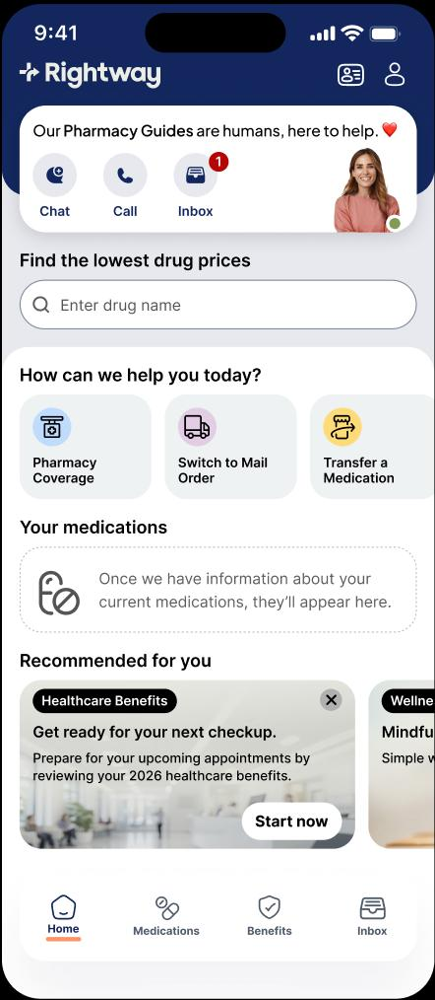
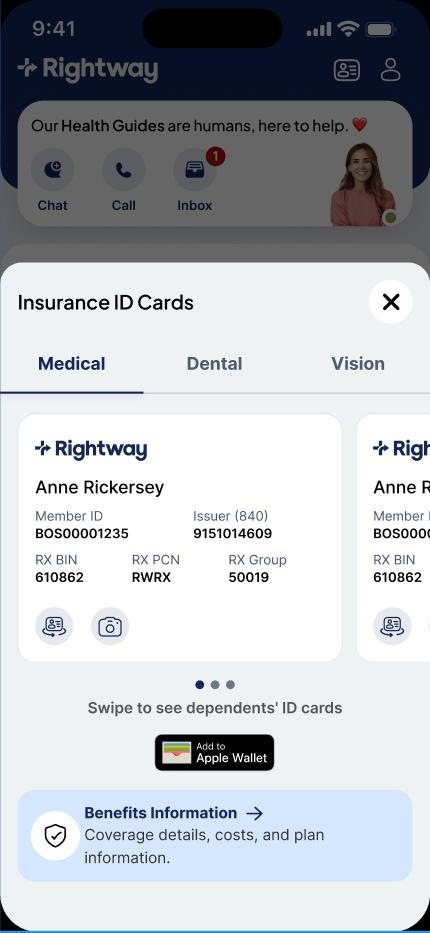
Healthcare B2B SaaS‑платформа (единорог, $1.1B) в системе здравоохранения на рынке США.
rightwayhealthcare.com ↗Rightway — американская HealthTech‑компания‑единорог с оценкой $1.1B, радикально меняющая то, как люди получают медицинскую помощь и покупают лекарства. В конце 2025 года Rightway заняла 42‑е место в рейтинге Deloitte Fast 500 самых быстрорастущих технологических компаний Северной Америки.
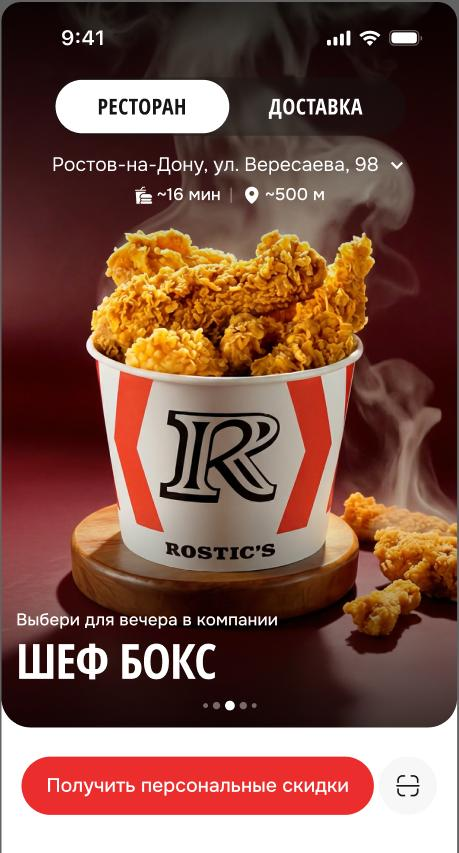
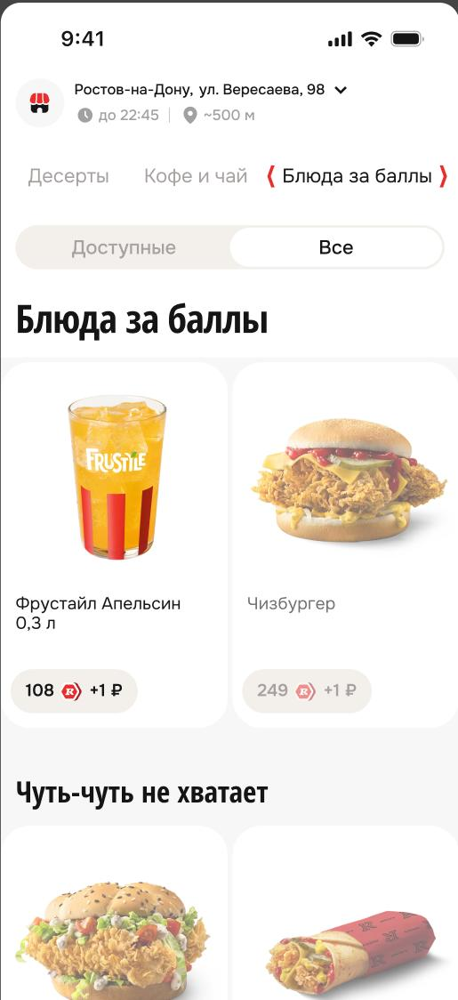
Разработка с нуля highload‑приложения в сфере Fast Food. ~1 300 ресторанов, 5M+ MAU.
Google Play ↗Разработка с нуля нового highload‑мобильного приложения Rostic's — Fast Food сеть с ежемесячной аудиторией более 5M человек, ~1 300 ресторанов.
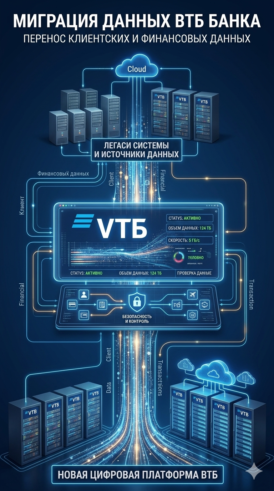
20+ проектов Data/BI для ВТБ, Открытия и других банков. Миграция DDS‑слоя ВТБ.
Реализация проектов по подготовке витрин данных, миграции хранилища и построению BI‑отчётности для банков Топ‑10.
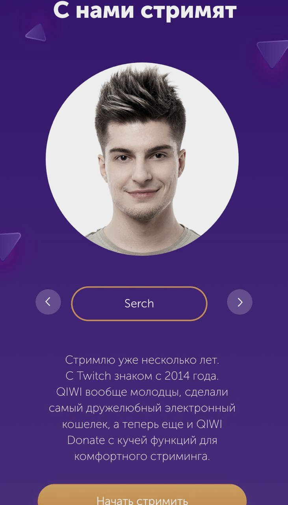
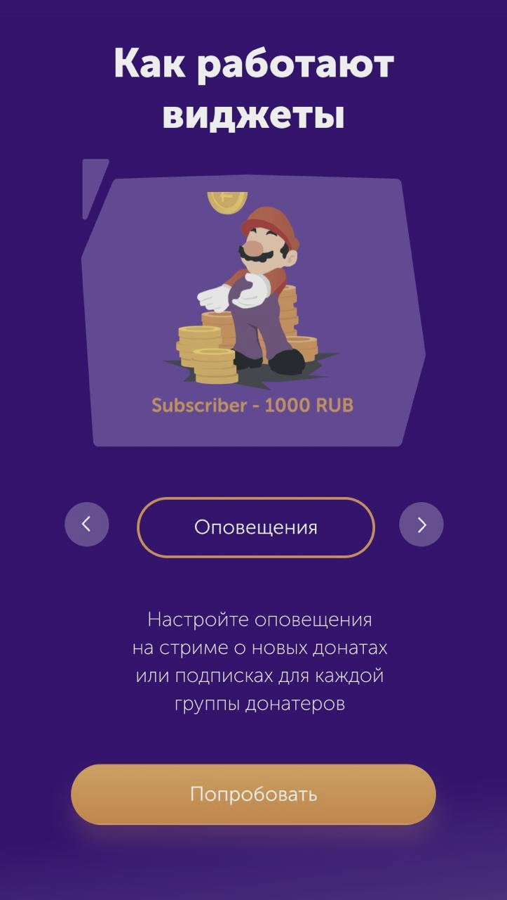
Финтех‑сервис для стримеров. 31% всех донатов на российском рынке. TPV 7 млрд ₽.
donate.qiwi.com ↗Специализированный финтех‑сервис от группы QIWI для стримеров и создателей контента. Позволяет авторам принимать пожертвования во время прямых трансляций на Twitch, YouTube и VK Play. Прямой конкурент DonationAlerts с глубокой интеграцией в экосистему QIWI — максимально быстрый и выгодный вывод средств.
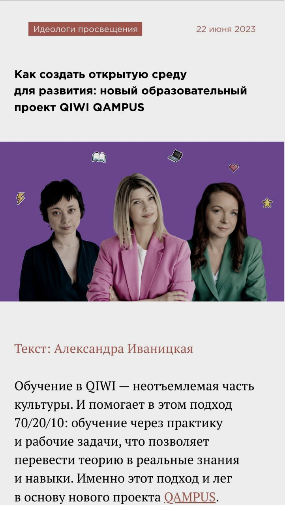
Корпоративный LMS QIWI для 3 000+ сотрудников. Вышел в отдельный B2B‑продукт.
Лендинг Qampus ↗Корпоративный LMS и система управления знаниями для сотрудников QIWI. Построен на методологии непрерывного обучения 70/20/10: индивидуальные треки развития, hard/soft skills, онбординг, доступ к внутренней библиотеке. Изначально внутренний инструмент — вышел как отдельный B2B‑продукт со своей монетизацией.
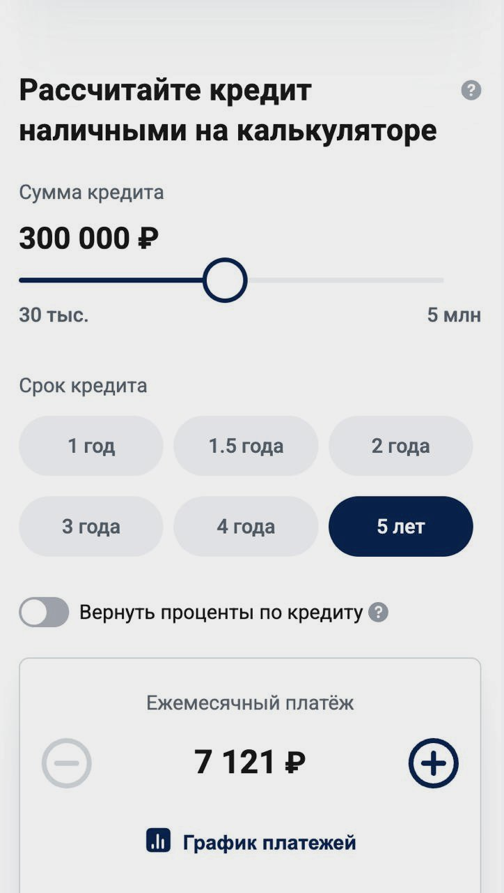
С одного лендинга — до портфеля из 10 проектов. Рост аккаунта в 10 раз до $2M/год.
Заказчик пришёл с проектом по реализации одного лендингового сайта. Благодаря чёткой работе и налаживанию прозрачных процессов взаимодействия удалось забрать больше проектов и зарекомендовать компанию как надёжного партнёра.
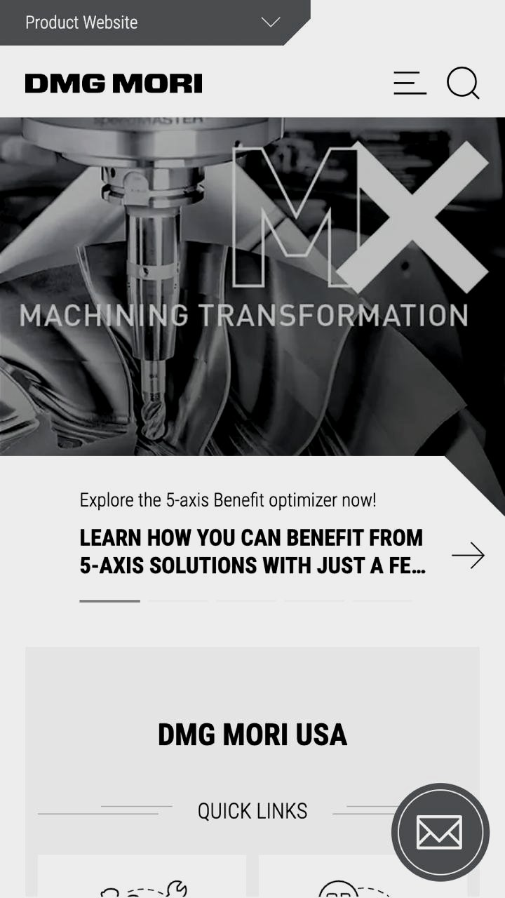
80+ станков в MES. Первое в России шпиндельное производство. Команда 120+ человек.
Подключение металлообрабатывающих станков в единую систему цифровизации для отслеживания цепочки производства, поиска узких мест и оптимизации процесса для повышения КПД и пропускной способности. Запуск первого в России шпиндельного производства.